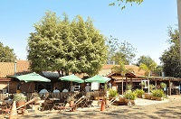

que mais gosto de comer em santa barbara d`oeste
comer no rancho da costela!
Um restaurante típico de fazenda. Além da consagrada costela "Mais Caminhos“, ofertam deliciosos pratos, sobremesas, café premium e chopp de qualidade. Tudo isso em um ambiente campestre, sereno e acolhedor. Em atividade desde 1996.
Conheça mais sobre o Rancho da Costela visitando sua página no saiba mais
Fazer um piquenique no Parque dos Ipês

Tanto no fim de tarde quanto aos finais de semana o Parque dos Ipês é sempre um bom local para passar um tempo com a família.
Descubra mais sobre o Parque dos Ipês pesquisando no Google sobre o local
Caminhar no Caminho dos Flamboyants

Se exercitar é sempre algo recomendável, ainda mais se for em um local agradável e perto da natureza.
Veja no mapa aonde fica esse local